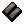
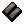
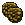
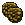
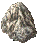
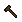
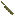
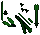

アイテム作成時に付加される効果
１．高品質の効果
高品質のアイテムを作成したときに付加される効果を以下に示します。
（１）武器
対象 ： 鍛冶、細工、大工、石工、弓工、硝工
- 武器ダメージ+35％。Publish73以降、Runic tool製は武器ダメージ+20％となっている（不具合かどうかは不明）。
ただし、Arms lore[武器学]スキル20.0毎（上級者シャードでは12.5毎）に、1％加算される。
- 耐久値+20％。プロパティとして表示はされない。
（２）鎧などの防具
対象 ： 鍛冶、裁縫、細工、大工、石工
- 普通の作成道具では、抵抗値合計15％がランダムに振り分けられる。Runic tool製では、ランダムに振り分けられる抵抗値が6％となる。
ただし、Arms lore[武器学]スキル20.0毎（上級者シャードでは12.5毎）に、振り分けられる抵抗値の合計が1％加算される。
- 耐久値+20％。プロパティとして表示はされない。
- 和プレート系防具、陣笠に「瞑想可」の効果が追加される。
（３）盾
対象 ： 鍛冶、大工、石工
（４）チャージ数のあるアイテム
対象 ： 鍛冶（手裏剣）、細工（道具類）、大工（楽器類）、弓工（吹き矢）
- チャージ数（使用回数）が標準品の2倍となる。
ただし、下に示すアイテムは、標準品の使用回数を1回加算した上で2倍しているため、標準品の4倍程度となる。
 scribe's pen [書写ペン]
scribe's pen [書写ペン] mapmaker's pen [地図作成ペン]
mapmaker's pen [地図作成ペン] fletcher's tool [弓矢作成ツール]
fletcher's tool [弓矢作成ツール] skillet [フライパン]
skillet [フライパン]- flour sifter [粉ふるい]
- rolling pin [めん棒]
（５）その他
高品質の設定がある上記以外のアイテムには、それによる特別な効果は付与されません。
２．特殊素材の効果
装備品（武器・防具・盾）を特殊な素材で作成したとき、その品質にかかわらず特殊素材の効果が付加されます。
特殊素材により付加される効果は「素材情報＞特殊素材の効果(Publish81版)」にまとめています。
（１）インゴット（ingot）
対象 ： 鍛冶、細工
 iron ingot （標準） ／ dullcopper ingot ／
iron ingot （標準） ／ dullcopper ingot ／ shadow ingot
shadow ingot- copper ingot ／
 bronze ingot ／
bronze ingot ／ gold ingot
gold ingot
 agapite ingot ／
agapite ingot ／ verite ingot ／
verite ingot ／ valorite ingot
valorite ingot
（２）革（leather）
対象 ： 裁縫
 leather （標準） ／
leather （標準） ／ spined leather
spined leather horned leather ／
horned leather ／ barbed leather
barbed leather
（３）木材（boardまたはlog）
対象 ： 大工、弓工
 wood （標準） ／
wood （標準） ／ oak ／
oak ／ ash
ash yew ／
yew ／ heartwood
heartwood bloodwood ／
bloodwood ／ frostwood
frostwood
（４）鱗（scale）
対象 ： 鍛冶
 red scale ／ yellow scale ／
red scale ／ yellow scale ／ green scale
green scale blue scale ／
blue scale ／ white scale ／
white scale ／ black scale
black scale
（５）花崗岩（granite）
対象 ： 石工
-  granite （標準） ／
 dullcopper granite ／
dullcopper granite ／ shadow granite
shadow granite
 copper granite ／
copper granite ／ bronze granite ／
bronze granite ／ gold granite
gold granite agapite granite ／
agapite granite ／ verite granite ／
verite granite ／ valorite granite
valorite granite
３．Runic toolの効果
Runic tool[ルニック作成道具]を使って装備品を作成したとき、ランダムにマジック効果が付加されます。
付加されるマジック効果の数およびその強度は、使用した道具のランクによって変わります。
また、Publish74より、Runic toolを使った装備品の改良が追加されました（装備品の改良）。
- runic hammer[ルニックハンマー] ： 鍛冶バルクオーダー
- runic sewing kit[ルニック裁縫道具] ： 裁縫バルクオーダー
- runic dovetail saw[ルニック大工道具] ： heartwood内の大工系クエスト
- runic fletching tool[ルニック弓矢工具] ： heartwood内の弓工系クエスト
- runic mallet and chisel[ルニック石工道具] ： royal city内の練成クエスト
| smith hammer |
Dull |
Shadow |
Copper |
Bronze |
| 画像 |
 |
 |
 |
 |
| 使用回数 |
50 |
45 |
40 |
35 |
| 効果強度（％） |
40〜100 |
45〜100 |
50〜100 |
55〜100 |
| 付加プロパティ数 |
1〜2 |
2 |
2〜3 |
3 |
| smith hammer |
Gold |
Agapite |
Verite |
Valorite |
| 画像 |
 |
 |
 |
 |
| 使用回数 |
30 |
25 |
20 |
15 |
| 効果強度（％） |
60〜100 |
65〜100 |
70〜100 |
85〜100 |
| 付加プロパティ数 |
3〜4 |
4 |
4〜5 |
5 |
runic sewing kitの効果は帽子類には適用されません。
| sewing kit |
Spined |
Horned |
Barbed |
| 画像 |
|
 |
 |
| 使用回数 |
45 |
30 |
15 |
| 効果強度（％） |
40〜100 |
45〜100 |
50〜100 |
| 付加プロパティ数 |
1〜3 |
3〜4 |
4〜5 |
| dovetail saw |
Oak |
Ash |
Yew |
Heartwood |
| 画像 |
 |
 |
 |
 |
| 使用回数 |
45 |
35 |
25 |
15 |
| 効果強度（％） |
25〜50 |
35〜75 |
40〜90 |
50〜100 |
| 付加プロパティ数 |
1〜2 |
2〜3 |
3 |
4 |
| fletching tool |
Oak |
Ash |
Yew |
Heartwood |
| 画像 |
 |
 |
 |
 |
| 使用回数 |
45 |
35 |
25 |
15 |
| 効果強度（％） |
25〜50 |
35〜75 |
40〜90 |
50〜100 |
| 付加プロパティ数 |
1〜2 |
2〜3 |
3 |
4 |
| mallet |
Dull |
Shadow |
Copper |
Bronze |
| 画像 |
 |
 |
 |
 |
| 使用回数 |
10 |
10 |
10 |
10 |
| 効果強度（％） |
40〜100 |
45〜100 |
50〜100 |
55〜100 |
| 付加プロパティ数 |
1〜2 |
2 |
2〜3 |
3 |
| mallet |
Gold |
Agapite |
Verite |
Valorite |
| 画像 |
 |
 |
 |
 |
| 使用回数 |
10 |
10 |
10 |
10 |
| 効果強度（％） |
60〜100 |
65〜100 |
70〜100 |
85〜100 |
| 付加プロパティ数 |
3〜4 |
4 |
4〜5 |
5 |
４．レシピ装備品の効果（鍛冶・裁縫・大工・弓工）
Heartwoodなどのクエストで入手できるレシピを習得し、その装備品を作成すると、レシピ固有のプロパティが付加されます。
レシピ装備品（下級）
レシピ装備品（上級）